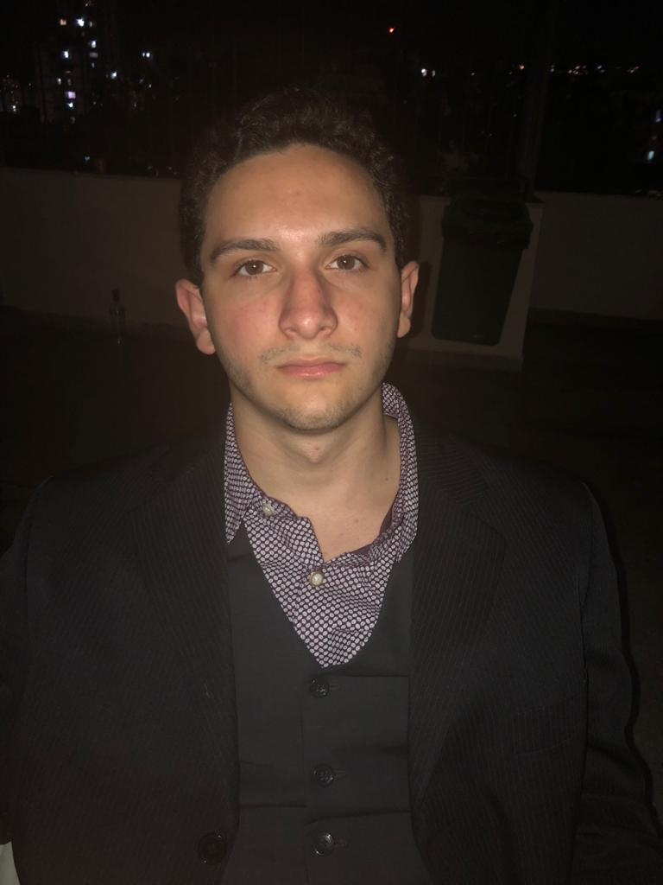
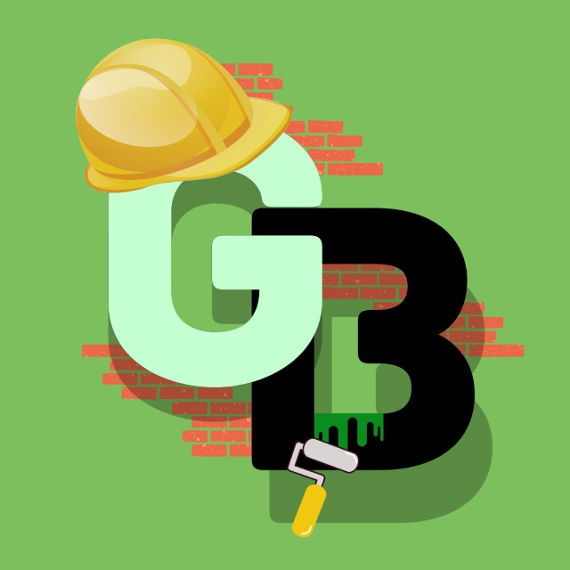

Me chamo Lucas Farias, tenho 19 anos e sou fascinado pela tecnologia.
Sou formado pela instituição de ensino militar Fundação Osório, onde também adquiri o diploma de Técnico em administração de empresas, onde aprendi a liderar e organizar projetos, tais como, escritório modelo de administração. Também estagiei no Tribunal Regional Federal da 2ª região, o que agregou bastante a minha formação como indivíduo e profissional. Por último, o ensino militar me ajudou a ter disciplina e a saber lidar com situações de estresse de forma calma e lógica.
Dentre as minhas qualidades estão principalmente, criatividade e proatividade, alem de boa comunicação e boa interação com a equipe.
Minhas experiências profissionais Minhas Habilidades Fale comigo Meus projetos Meu currículo
Onde lidei com registro e movimentação de expedientes no sistema de computador, cadastro e movimentação de processos no sistema de computador, consulta de dados nos sistemas informatizados do TRF, entrega de processos e expedientes nas unidades internas do TRF, carimbo, numeração, montagem e envelopamento de processos, Restauração de processos, localização de processos, Atendimento ao público e telefônico, digitação de planilhas, pesquisa na internet e transmissão de e-mails.
Ensino médio concluido na escola militar Fundação Osório (2019).
Técnico em administração pela escola militar Fundação Osório (2019).
Cursando Sistemas de informação pela Universidade Veiga de Almeida (período atual).
Inglês de nível intermediário.
Espanhol de nível básico.
Gráficos/Web: Adobe Photoshop.
Aplicações de Escritório: Microsoft Excel, Microsoft Outlook, Microsoft PowerPoint, Microsoft Word.
Sistemas Operacionais: Windows.
 Tema: Otimização e Redução de Gastos e Recursos na Construção Civil para Profissionais Autônomos e Pequenas Empresas.
Descrição: Com o avanço da pandemia e o isolamento social, as pessoas ficaram em suas residências por mais tempo e o trabalho de home office passou a se tornar rotina de muitas pessoas no Brasil e no mundo. Devido ao ocorrido, pequenos detalhes, que no dia a dia, passavam-se despercebido vieram à tona. A vontade de viver o novo é a característica que nos acompanha há séculos, o novo faz parte de nossas vidas, estamos em constante mudança e adaptação, não conseguimos viver com o velho por muito tempo e isso é bom para a evolução. É por isso que pensamos no projeto Green Building, o qual é voltado para construção civil e todo o tipo de público, desde pessoas simples, até média e grandes empresas que desejam construir ou fazer pequenas alterações em sua corporação e residência. Podem usufruir do mesmo, além da flexibilidade de saber o quanto de material e quanto tempo de mão de obra vai ser gasto, terá também uma projeção de quanto vai custar o projeto.
Celular: 9XXXXXX... Meu Perfil no: Linkedin